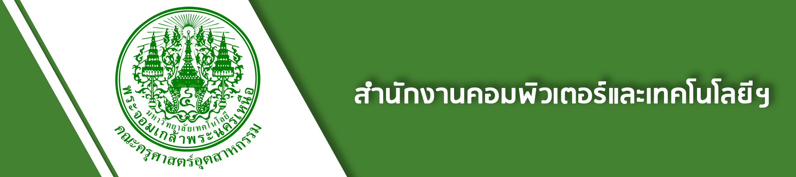
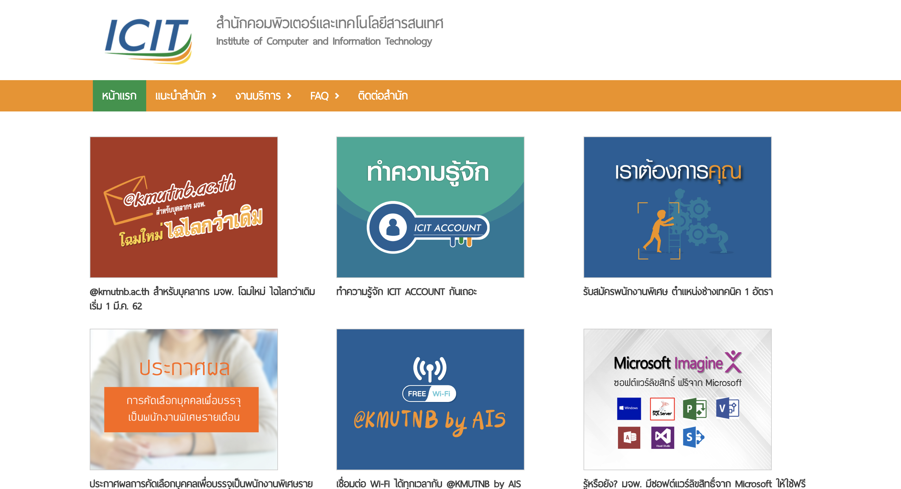

<!--
  Generated template for the IcitPage page.

  See http://ionicframework.com/docs/components/#navigation for more info on
  Ionic pages and navigation.
-->
<ion-header>

  

</ion-header>


<ion-content padding>
  <ion-card>
    <ion-card-header style="background-color:#42c431;">
      <h2 text-center><b>ICIT</b></h2>

    </ion-card-header>
    <ion-card>
      
    </ion-card>
    <ion-card-content>
      <b>สำนักคอมพิวเตอร์และเทคโนโลยีสารสนเทศ</b><br>
      อาคาร นวมินทร์ มจพ.1518 ถ.ประชาราษฎร์ 1 แขวงวงศ์สว่าง เขตบางซื่อ กรุงเทพฯ 10800<br>
      Tel. : 0-2555-2000 ต่อ 2205<br>
      e-mail : icitadmin@kmutnb.ac.th<br>
      <a href="https://www.facebook.com/ICIT.KMUTNB/">Facebook</a><br>
      <a href="http://icit.kmutnb.ac.th/main/" target="_system">Website</a><br>
      <a href="http://icit.kmutnb.ac.th/main/k-room/" target="_system">จองห้องออนไลน์</a><br>
      <a href="http://icit.kmutnb.ac.th/main/services/" target="_system">บริการอื่นๆ</a><br>
    </ion-card-content>
  </ion-card>
</ion-content>